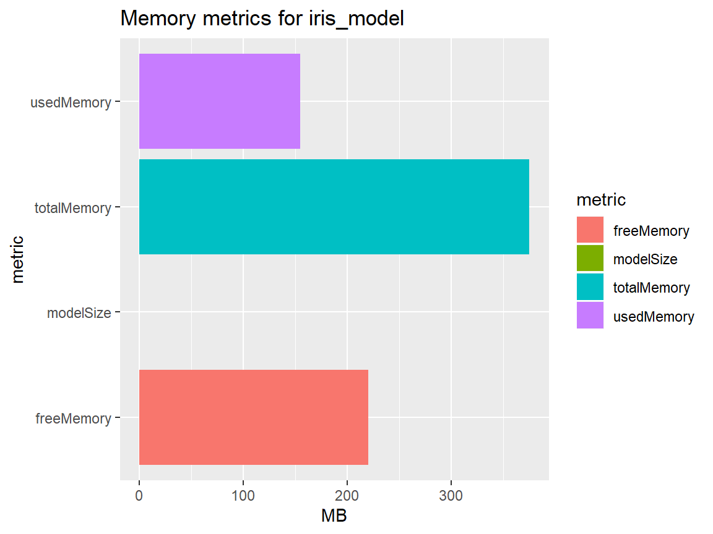
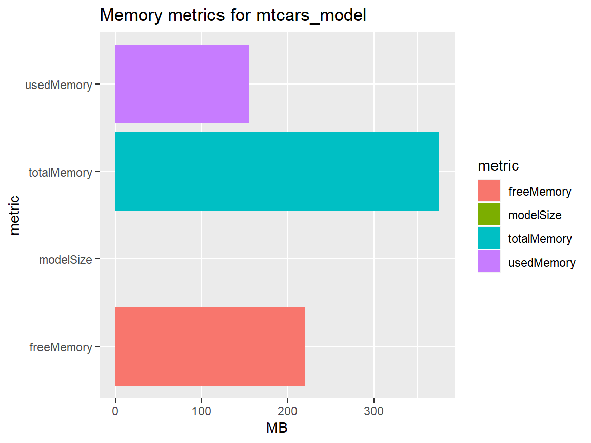
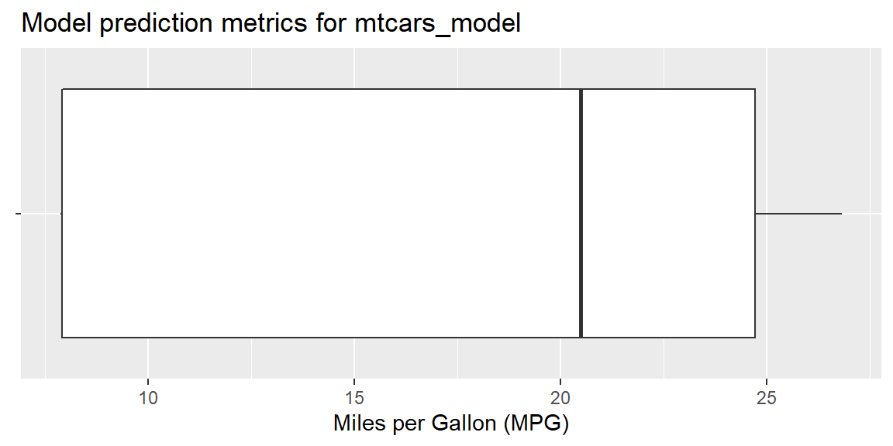

Downloading and visualizing model metrics
Alexander Lemm
Source:vignettes/model-metrics.Rmd
model-metrics.RmdZementis Server allows you to fetch model memory and model prediction metrics for each model that was deployed to the server. In this vignette we take a closer look at the function get_model_metrics() from zementisr that assists you in downloading the model metrics. Furthermore, we show you some best practices how to visualize the different model metrics of your predictive models.
Note: The features described in this vignette are only available for Zementis Server 10.3 or higher.
Some data science prep work
Before showing how to download the model metrics using the zementisr package, we will create two predictive models and upload them to the server: One classification model and one regression model. The prediction metrics returned from Zementis Server differ for these two model types.
We will use some shortcuts while following the data science process because we would like to concentrate on showcasing zementisr’s model metric-related functions in this vignette. For instance, we will just build the predictive models using the training sets without evaluating the model performances before deploying them to Zementis Server in PMML format. The test sets will be (mis-)used to simulate new and unseen data which is sent to Zementis Server for scoring.
Our classification model will be a classification tree created using the rpart() function and the iris data set. The classification tree will be used to predict the iris species.
set.seed(42)
iris <- iris[sample(nrow(iris)), ]
index <- caTools::sample.split(iris$Species, 0.8)
training_set <- iris[index, ]
test_set_iris <- iris[!index, ]
iris_cart <- rpart::rpart(Species~., data = training_set)We will use the built-in data set mtcars to create a multiple linear regression model for predicting car consumption measured in miles per gallon (MPG).
index <- caTools::sample.split(mtcars$mpg, 0.8)
training_set <- mtcars[index, ]
test_set_mtcars <- mtcars[!index, ]
mtcars_lm <- lm(mpg ~ wt + qsec + am, data = training_set)Now, we will convert both models to PMML and upload them to the server:
Retrieving model metrics from Zementis Server
Initially, get_model_metrics() will only return the memory related metrics expressed in MB if the model on the server has not yet predicted any new values which is the case for both models we just uploaded:
get_model_metrics("iris_model")
#> $model_name
#> [1] "iris_model"
#>
#> $memory_metrics
#> # A tibble: 1 x 4
#> modelSize usedMemory freeMemory totalMemory
#> <dbl> <dbl> <dbl> <dbl>
#> 1 0.009 87.5 263. 351
get_model_metrics("mtcars_model")
#> $model_name
#> [1] "mtcars_model"
#>
#> $memory_metrics
#> # A tibble: 1 x 4
#> modelSize usedMemory freeMemory totalMemory
#> <dbl> <dbl> <dbl> <dbl>
#> 1 0.003 87.8 263. 351The memory metrics returned from get_model_metrics() are in fact a mix between server memory and model memory specific KPIs:
- modelSize: The amount of memory consumed by the specific model itself
- usedMemory: The entire memory currently used by all models and other resources on the server
- freeMemory: The memory still available on the server
- totalMemory: The total amount of server memory
Looking at the output above we see that both models only consume a tiny amount of memory. That makes sense because they represent really simple models which were trained using very small data sets. Ensemble models like a random forest model or a deep neural network trained with a lot of data including many predictor variables would consume far more memory.
Next, we will send 500 new values to each model deployed on Zementis Server for scoring. The data mimicking our new and unseen data will be samples we draw from the two test sets we created above.
index <- sample(1:dim(test_set_iris)[1], 500, replace = TRUE)
iris_predictions <- predict_pmml_batch(test_set_iris[index, ], "iris_model")
head(iris_predictions$outputs, 4)
#> Predicted_Species Probability_setosa Probability_versicolor
#> 1 setosa 1 0.0000000
#> 2 versicolor 0 0.9285714
#> 3 setosa 1 0.0000000
#> 4 setosa 1 0.0000000
#> Probability_virginica
#> 1 0.00000000
#> 2 0.07142857
#> 3 0.00000000
#> 4 0.00000000
index <- sample(1:dim(test_set_mtcars)[1], 500, replace = TRUE)
mtcars_predictions <- predict_pmml_batch(test_set_mtcars[index, ], "mtcars_model")
head(mtcars_predictions$outputs, 4)
#> Predicted_mpg
#> 1 7.861123
#> 2 16.323236
#> 3 20.489327
#> 4 16.323236After executing get_model_metrics() a second time, the response now includes the prediction-related metrics as well. As you can see the prediction metrics differ between classification and regression models.
For classification models the number of predictions for each class since model activation on the server are returned:
iris_metrics <- get_model_metrics("iris_model")
iris_metrics
#> $model_name
#> [1] "iris_model"
#>
#> $prediction_metrics
#> # A tibble: 1 x 3
#> virginica setosa versicolor
#> <int> <int> <int>
#> 1 146 141 213
#>
#> $memory_metrics
#> # A tibble: 1 x 4
#> modelSize usedMemory freeMemory totalMemory
#> <dbl> <dbl> <dbl> <dbl>
#> 1 0.009 93.9 257. 351Prediction-related metrics for regression models include the Five-number summary since model activation on the server:
mtcars_metrics <- get_model_metrics("mtcars_model")
mtcars_metrics
#> $model_name
#> [1] "mtcars_model"
#>
#> $prediction_metrics
#> # A tibble: 1 x 6
#> Minimum FirstQuartile Median ThirdQuartile Maximum TotalObservations
#> <dbl> <dbl> <dbl> <dbl> <dbl> <int>
#> 1 7.86 7.91 20.5 24.7 26.8 500
#>
#> $memory_metrics
#> # A tibble: 1 x 4
#> modelSize usedMemory freeMemory totalMemory
#> <dbl> <dbl> <dbl> <dbl>
#> 1 0.003 94.1 257. 351Visualizing model memory metrics
In this and in the next section we will use ggplot2 to visualize both the memory metrics and the prediction metrics for both models we just received from the server.
Let’s get started with visualizing the memory metrics:
library(ggplot2)
iris_metrics[["memory_metrics"]] %>%
tidyr::gather("metric", "MB") %>%
ggplot(aes(metric, MB)) +
geom_col(aes(fill = metric)) +
coord_flip() +
labs(title = paste("Memory metrics for", iris_metrics[["model_name"]]))
mtcars_metrics[["memory_metrics"]] %>%
tidyr::gather("metric", "MB") %>%
ggplot(aes(metric, MB)) +
geom_col(aes(fill = metric)) +
coord_flip() +
labs(title = paste("Memory metrics for", mtcars_metrics[["model_name"]]))
Visualizing model prediction metrics
The prediction metrics are next. For classification models it makes most sense to create a bar chart based on the underlying data:
iris_metrics[["prediction_metrics"]] %>%
tidyr::gather("Class", "Number of cases") %>%
ggplot(aes(Class, `Number of cases`)) +
geom_col(aes(fill = Class)) +
coord_flip() +
labs(title = paste("Model prediction metrics for", iris_metrics[["model_name"]]),
subtitle = paste("Predictions calcuated since model deployment:",
rowSums(iris_metrics[["prediction_metrics"]])))
The best visualization for the 5-number summary of the regression model is a boxplot:
mtcars_metrics[["prediction_metrics"]] %>%
ggplot(aes(x = "")) +
stat_identity(
aes(
lower = FirstQuartile,
upper = ThirdQuartile,
middle = Median,
ymin = Minimum,
ymax = Maximum
),
geom = "boxplot") +
coord_flip() +
labs(
title = paste("Model prediction metrics for", mtcars_metrics[["model_name"]])
) +
xlab(NULL) +
ylab("Miles per Gallon (MPG)")
Resetting the model metrics
Every time a model is deactivated on the server, the corresponding model metrics are automatically reset. Calling get_model_metrics() on a deactivated model just returns the model name. Neither the memory metrics nor the prediction metrics are returned in this case.
Let us demonstrate this behavior. First, we will deactivate the iris classification tree on the server:
Next, we try to download the model metrics again for the iris classification tree. However, this time the return list will only include the model name since the deactivation reset the complete model metrics:
Re-activating the model and calling get_model_metrics(), now returns the model name plus the memory model metrics:
activate_model("iris_model")
#> $model_name
#> [1] "iris_model"
#>
#> $is_active
#> [1] TRUE
get_model_metrics("iris_model")
#> $model_name
#> [1] "iris_model"
#>
#> $memory_metrics
#> # A tibble: 1 x 4
#> modelSize usedMemory freeMemory totalMemory
#> <dbl> <dbl> <dbl> <dbl>
#> 1 0.01 96.0 255. 351The returned list above does not include the prediction metrics for the iris model since the model deactivation before completely reset these metrics. Not before new data for scoring is sent to the server, the prediction metrics will be included in the server’s response:
get_model_metrics("iris_model")
#> $model_name
#> [1] "iris_model"
#>
#> $prediction_metrics
#> # A tibble: 1 x 3
#> virginica setosa versicolor
#> <int> <int> <int>
#> 1 3 1 1
#>
#> $memory_metrics
#> # A tibble: 1 x 4
#> modelSize usedMemory freeMemory totalMemory
#> <dbl> <dbl> <dbl> <dbl>
#> 1 0.01 96.7 254. 351